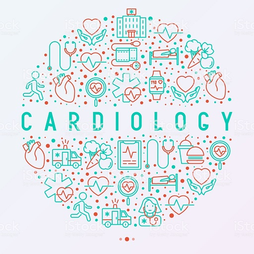

About Cardiology
Cardiology is a medical specialty and a branch of internal medicine concerned with disorders of the heart. It deals with the diagnosis and treatment of such conditions as congenital heart defects, coronary artery disease, electrophysiology, heart failure and valvular heart disease. Subspecialties of the cardiology field include cardiac electrophysiology, echocardiography, interventional cardiology and nuclear cardiology.
Top cardiologists offer their opinion on maintaining a healthy heart
1.Tame your stress
Dr. Dan Wohlgelernter, MD, a Santa Monica cardiologist suggests to start thinking about heart health early on, with a main focus on controlling stress. He says, “You must tame your stress. Long-term stress can lead to long-term damage to your heart – your heart rate and blood pressure rise causing injury to the artery walls.” He advises patients to adopt some stress-management techniques – it can be as simple as deep breathing exercises, but he also encourages activities, like volunteering, to knock out stress.
2.Eat well, sleep well and stop smoking
Dr. Garth Graham MD MPH is a cardiologist the former deputy assistant secretary in the U.S. Department of Health and Human Services and current president of the Aetna Foundation. To keep your heart healthy he says It’s important to maintain a diet high in fiber, fish, whole grains and nuts. Avoid salty and high sodium foods. He suggests to make shopping for healthy food more fun seek out a local farmers market for fresh fruits and vegetables. He also encourages getting some shut eye. No matter your age, getting six to eight hours per night is essential to your health. Not doing so can put you at a higher risk for cardiovascular disease and make you twice as likely to experience a stroke, regardless of your other health habits.